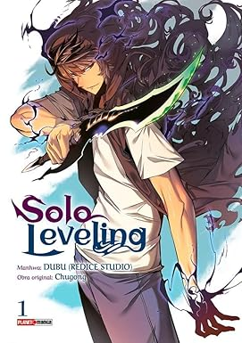

🎬 Homem Aranha - No Way Home
Meu depoimento sobre o filme:
Quando criança uma vez estava passando o filme do homem aranha na televisão com meu pai assistindo , foi amor a primeira vista , depois disso virei fã do ator
e personagem. E ver todos os três atores juntos foi inesquecivel , um dos melhores filmes da minha vida , juntou o novo com a memória afetiva e foi incrível.
📚 Livro que Li

Meu relato sobre o livro:
Solo Leveling se trata de uma weebtoon que não é nada mais que uma história em quadrinhos feita na Coreia do Sul, sempre fui fã de animes(desenhos Japoneses),mas quando se trata
de livros os tão conhecidos mangás não me agradavam muito por não apresentarem cor em suas ilustrações , até que conheci os weebtoons , são histórias parecidas com mangás , mas
que possuem coloração em suas imagens e um design muito belo, este foi meu primeiro weebtoon e que me fez me aventurar nesse mundo tão vasto e brilhante que são essas histórias.
👤 Sobre Mim
Meu depoimento pessoal:
Escreva aqui um pouco sobre você! Fale sobre seus hobbies, o que gosta de fazer
no tempo livre, seus objetivos com o curso de Técnico em Informática para Internet,
suas expectativas para o futuro profissional, e qualquer outra informação que
considere importante para se apresentar.